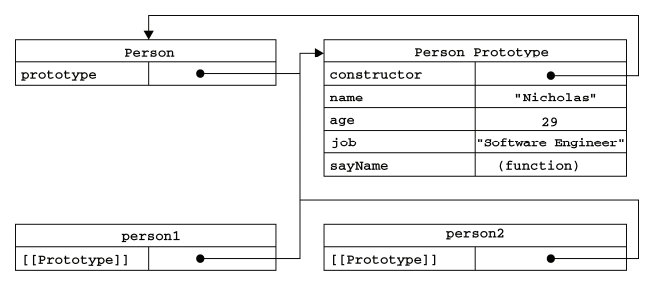
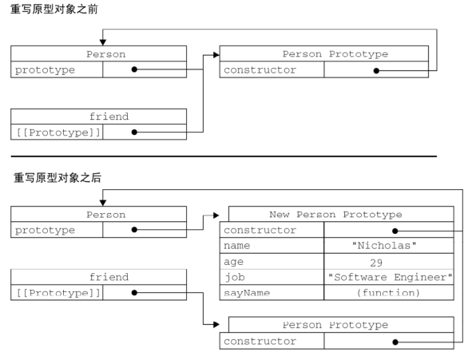

面向对象设计（高3 P138）
面向对象(Object-Oriented,OO)的语言有一个标志，那就是它们都有类的概念，而通过类可以创建任意多个具有相同属性和方法的对象。
理解对象
属性类型（ecma262v5）
ecma262中有两种属性:数据属性和访问器属性。 //例1 var person = { name: "Nicholas", age: 29, job: "Software Engineer", sayName: function(){ alert(this.name); } }; 1.数据属性 [[Configurable]] 表示能否通过 delete 删除属性从而重新定义属性、能否修改属性的特性、能否把属性修改为访问器属性。 默认为true。 [[Enumerable]] 表示能否通过 for-in 循环返回属性。即，是否可枚举。 默认为true。 [[Writable]] 表示能否修改属性的值。 默认为true。 [[Value]] 包含这个属性的数据值。 默认值为undefined。 // 例子 var person = { name: "Nicholas" }; 要修改属性默认的特性，必须使用 ecma262v5 的 Object.defineProperty()方法。 描述符（descriptor）对象的属性必须是：configurable、enumerable、writable 和 value。 var person = {}; Object.defineProperty(person, "name", { writable: false, value: "Nicholas" }); alert(person.name); //"Nicholas" person.name = "Greg"; alert(person.name); //"Nicholas" 这个属性的值是不可修改的，如果尝试为它指定新值，则在非严格模式下，赋值操作将被忽略； 在严格模式下，赋值操作将会导致抛出错误。 var person = {}; Object.defineProperty(person, "name", { configurable: false, value: "Nicholas" }); //抛出错误 Object.defineProperty(person, "name", { configurable: true, value: "Nicholas" }); 一旦把属性定义为不可配置的，就不能再把它变回可配置了。 在调用 Object.defineProperty()方法时，如果不指定 configurable、enumerable 和 writable 特性的默认值都是 false。 多数情况下，可能都没有必要利用 Object.defineProperty()方法提供的这些高级功能。 不过，理解这些概念对理解 JavaScript 对象却非常有用。 IE8 是第一个实现 Object.defineProperty()方法的浏览器版本。 然而，这个版本的实现存在诸多限制： 1）只能在 DOM 对象上使用这个方法 2）而且只能创建访问器属性。 由于实现不彻底，建议不要在 IE8 中使用 Object.defineProperty() 方法。 2.访问器属性 包含一对儿 getter 和 setter 函数（不过，这两个函数都不是必需的）。 [[Configurable]] 表示能否通过 delete 删除属性从而重新定义属性、能否修改属性的特性、能否把属性修改为数据属性。 默认为true。 [[Enumerable]] 表示能否通过 for-in 循环返回属性。即，是否可枚举。 默认为true。 [[Get]] 在读取属性时调用的函数。默认值为 undefined。 [[Set]] 在写入属性时调用的函数。默认值为 undefined。 // 例子 var book = { _year: 2004, edition: 1 }; Object.defineProperty(book, "year", { get: function(){ return this._year; }, set: function(newValue){ if (newValue > 2004) { this._year = newValue; this.edition += newValue - 2004; } } }); book.year = 2005; alert(book.edition); //2 不一定非要同时指定 getter 和 setter。但是只指定其中任意一个，另外一个默认都是undefined。实际操作中读取或赋值都会报错。 注意： 1）支持 ECMAScript 5 的Object.defineProperty()这个方法的浏览器有 IE9+（IE8 只是部分实现）、Firefox 4+、Safari 5+、Opera12+ 和 Chrome 。 2）很早之前，要创建访问器属性，一般都使用两个非标准的方法： __defineGetter__()和__defineSetter__()。 这两个方法最初是由 Firefox 引入的，后来 Safari 3、Chrome 1 和 Opera 9.5 也给出了相同的实现。 如： var book = { _year: 2004, edition: 1 }; //定义访问器的旧有方法 book.__defineGetter__("year", function(){ return this._year; }); book.__defineSetter__("year", function(newValue){ if (newValue > 2004) { this._year = newValue; this.edition += newValue - 2004; } }); book.year = 2005; alert(book.edition); //2 3.定义多个属性 利用 Object.defineProperties() 方法可以通过描述符一次定义多个属性。 var book = {}; Object.defineProperties(book, { _year: { wirtable: true, // 为什么这个必须加？ value: 2004 }, edition: { value: 1 }, year: { get: function(){ return this._year; }, set: function(newValue){ if (newValue > 2004) { this._year = newValue; this.edition += newValue - 2004; } } } }); 这样就没有问题： var book = { _year: 2004, edition: 1 }; Object.defineProperties(book, { year: { get: function(){ return this._year; }, set: function(newValue){ if (newValue > 2004) { this._year = newValue; this.edition += newValue - 2004; } } } }); 注意： 支持 Object.defineProperties()方法的浏览器有 IE9+、Firefox 4+、Safari 5+、Opera 12+和Chrome。 4.读取属性的特性 Object.getOwnPropertyDescriptor()方法，可以取得给定属性的描述符。 // 例子 var book = {}; Object.defineProperties(book, { _year: { value: 2004 }, edition: { value: 1 }, year: { get: function(){ return this._year; }, set: function(newValue){ if (newValue > 2004) { this._year = newValue; this.edition += newValue - 2004; } } } }); var descriptor = Object.getOwnPropertyDescriptor(book, "_year"); console.log(descriptor.value); //2004 console.log(descriptor.configurable); //false console.log(typeof descriptor.get); //"undefined" var yearDescriptor = Object.getOwnPropertyDescriptor(book, "year"); console.log(yearDescriptor.value); // undefined console.log(yearDescriptor.enumerable); // false console.log(typeof yearDescriptor.get); // "function" 注意： 在 JavaScript 中，可以针对任何对象——包括 DOM 和 BOM 对象，使用 Object.getOwnPropertyDescriptor()方法。 支持这个方法的浏览器有IE9+、Firefox 4+、Safari 5+、Opera 12+和 Chrome。
创建对象
工厂模式
function createPerson(name, age, job){ var o = new Object(); o.name = name; o.age = age; o.job = job; o.sayName = function(){ alert(this.name); }; return o; }; var person1 = createPerson("Nicholas", 29, "Software Engineer"); var person2 = createPerson("Greg", 27, "Doctor");
构造函数模式
function Person(name, age, job){ this.name = name; this.age = age; this.job = job; this.sayName = function(){ alert(this.name); }; }; var person1 = new Person("Nicholas", 29, "Software Engineer"); var person2 = new Person("Greg", 27, "Doctor"); alert(person1.constructor == Person); //true alert(person2.constructor == Person); //true alert(person1 instanceof Object); //true alert(person1 instanceof Person); //true alert(person2 instanceof Object); //true alert(person2 instanceof Person); //true 注意： 1）所有对象均继承自 Object。 2）使用构造函数的主要问题，就是每个方法都要在每个实例上重新创建一遍。
原型模式
1）每个函数都有一个 prototype（原型）属性，这个属性是一个指针，指向一个对象，而这个对象的用途是包含可以由特定类型的所有实例共享的属性和方法。 2）使用原型对象的好处是可以让所有对象实例共享它所包含的属性和方法。换句话说，不必在构造函数中定义对象实例的信息，而是可以将这些信息直接添加到原型对象中。 function Person(){} Person.prototype.name = "Nicholas"; Person.prototype.age = 29; Person.prototype.job = "Software Engineer"; Person.prototype.sayName = function(){ alert(this.name); }; var person1 = new Person(); person1.sayName(); //"Nicholas" var person2 = new Person(); person2.sayName(); //"Nicholas" alert(person1.sayName === person2.sayName); //true

1.理解原型对象 创建了自定义的构造函数之后，其原型对象默认只会取得 constructor 属性；至于其他方法，则都是从 Object 继承而来的。 当调用构造函数创建一个新实例后，该实例的内部将包含一个指针（内部属性），指向构造函数的原型对象。 ECMA-262v5中管这个指针叫[[Prototype]]。虽然在脚本中没有标准的方式访问[[Prototype]]，但 Firefox、Safari 和 Chrome 在每个对象上都支持一个属性__proto__；而在其他实现中，这个属性对脚本则是完全不可见的。 不过，要明确的真正重要的一点就是，这个连接存在于实例与构造函数的原型对象之间，而不是存在于实例与构造函数之间，换句话说，它们与构造函数没有直接的关系。 1）通过 isPrototypeOf() 方法可以来确定对象之间存在的关系 alert(Person.prototype.isPrototypeOf(person1)); //true alert(Person.prototype.isPrototypeOf(person2)); //true 2）Object.getPrototypeOf()方法（ecma262v5支持） alert(Object.getPrototypeOf(person1) == Person.prototype); //true alert(Object.getPrototypeOf(person1).name); //"Nicholas" 当为对象实例添加一个属性时，这个属性就会“屏蔽”原型对象中保存的同名属性； 换句话说，添加这个属性只会阻止我们访问原型中的那个属性，但不会修改那个属性。 即使将这个属性设置为 null，也只会在实例中设置这个属性，而不会影响其指向原型的连接。 不过，使用 delete 操作符则可以完全删除实例属性，从而让我们能够重新访问原型中的属性。 3）使用 hasOwnProperty()方法可以检测一个属性是存在于实例中，还是存在于原型中 alert(person1.hasOwnProperty("name")); //false 此属性存在于原型中 验证访问实例属性顺序： 构造器中定义的公共属性 -> 为实例后续添加的属性 -> 实例的构造器的原型上属性 function Person(){ this.name = 2; }; Person.prototype.name = "Nicholas"; var person1 = new Person(); console.log(person1.name); // 2 person1.name = 1; console.log(person1.name); // 1 delete person1.name; console.log(person1.name); // "Nicholas" 2.原型与 in 操作符 有两种方式使用 in 操作符：单独使用和在 for-in 循环中使用。 在单独使用时，in 操作符会在通过对象能够访问给定属性时返回 true，无论该属性存在于实例中还是原型中。 同时使用 hasOwnProperty()方法和 in 操作符，就可以确定该属性到底是存在于对象中，还是存在于原型中。 // 检测是否有原型属性 function hasPrototypeProperty(object, name){ return !object.hasOwnProperty(name) && (name in object); }; 在使用 for-in 循环时，返回的是所有能够通过对象访问的、可枚举的（enumerated）属性，其中既包括存在于实例中的属性，也包括存在于原型中的属性。 屏蔽了原型中不可枚举属性（即将[[Enumerable]]标记为 false 的属性）的实例属性也会在 for-in 循环中返回， 因为根据规定，所有开发人员定义的属性都是可枚举的——只有在 IE8 及更早版本中例外。 IE 早期版本的实现中存在一个 bug，即屏蔽不可枚举属性的实例属性不会出现在 for-in 循环中。 例如： var o = { toString : function(){ return "My Object"; } }; for (var prop in o){ if (prop == "toString"){ alert("Found toString"); //在 IE 中不会显示 } } ·要取得对象上所有可枚举的实例属性： Object.keys() （ecma262v5支持） function Person(){} Person.prototype.name = "Nicholas"; Person.prototype.age = 29; Person.prototype.job = "Software Engineer"; Person.prototype.sayName = function(){ alert(this.name); }; var keys = Object.keys(Person.prototype); console.log(keys); //["name,age,job,sayName"] var p1 = new Person(); p1.name = "Rob"; p1.age = 31; var p1keys = Object.keys(p1); console.log(p1keys); // ["name,age"] ·要得到所有实例属性,无论它是否可枚举： Object.getOwnPropertyNames() （ecma262v5） var keys = Object.getOwnPropertyNames(Person.prototype); console.log(keys); // ["constructor,name,age,job,sayName"] 3.更简单的原型语法 function Person(){} Person.prototype = { name : "Nicholas", age : 29, job: "Software Engineer", sayName : function () { alert(this.name); } }; 将 Person.prototype 设置为等于一个以对象字面量形式创建的新对象。 最终结果相同，但有一个例外：constructor 属性不再指向 Person 了。 其实这里本质上完全重写了构造函数 Person 默认的 prototype 对象， 因此 constructor 属性也就变成了新对象的 constructor 属性(指向 Object 构造函数)，不再指向 Person 函数。 尽管 instanceof 操作符还能返回正确的结果,但通过 constructor 已经无法确定对象的类型了。 var friend = new Person(); alert(friend instanceof Object); // true alert(friend instanceof Person); // true alert(friend.constructor == Person); // false alert(friend.constructor == Object); // true 如果 constructor 值真的很重要，则可以如下将其值设置回适当的值。 function Person(){} Person.prototype = { constructor: Person, name: "Nicholas", age: 29, job: "Software Engineer", sayName: function () { alert(this.name); } } 以这种方式重设 constructor 属性会导致它的 [[Enumerable]] 的特性为true。默认情况下 constructor 属性 是不可枚举的。因此支持 ecma262v5 的情况下，可以这样： function Person(){} Person.prototype = { name: "Nicholas", age: 29, job: "Software Engineer", sayName: function () { alert(this.name); } } Object.defineProperty(Person.prototype, 'constructor', { enumerable: false, value: Person }); 注意： propertyIsEnumerable() 方法可以判断对象属性是否可枚举。 function Person(){} Person.prototype = { name: "Nicholas" }; var p1 = new Person(); console.log(p1.propertyIsEnumerable("name")); // false p1.name = "Tom"; console.log(p1.propertyIsEnumerable("name")); // true 4.原型的动态性 var friend = new Person(); Person.prototype.sayHi = function(){ alert("hi"); }; friend.sayHi(); // "hi" 尽管可以随时为原型添加属性和方法，并且修改能立即在所有对象实例中反映出来。但是如果是重写整个原型对象， 那么情况就不一样了。 调用构造函数时会为实例添加一个指向最初原型的 [[Prototype]] 指针，而把原型修改为另外一个对象就等于 切断了构造函数与最初原型之间的联系，也切断了实例与最初原型指针的联系。 function Person(){} var friend = new Person(); Person.prototype = { constructor: Person, name : "Nicholas", age : 29, job : "Software Engineer", sayName : function () { alert(this.name); } }; friend.sayName(); // error，下图展示了这个过程的内幕

重写原型对象切断了现有原型与任何之前已存在的对象实例之间的联系。它们引用的仍是最初的原型。 5.原生对象的原型 如：Array.prototype.sort()、Array.prototype.splice()。 String.prototype.startsWith = function (text) { return this.indexOf(text) == 0; }; var msg = "Hello world!"; alert(msg.startsWith("Hello")); //true 尽管可以这样做，但是不建议在产品化过程中修改原生对象原型。 6.原型对象的问题 原型中所有属性是被很多实例共享的，这种共享对于函数非常合适。 对于那些包含基本值的属性倒也说得过去，通过在实例上添加一个同名属性，可以隐藏原型中的对应属性。 然而，对于包含引用类型值的属性来说，问题就比较突出了。 function Person(){} Person.prototype = { constructor : Person, name : "Nicholas", age : 29, job : "Software Engineer", friends : ["Shelby", "Court"], sayName : function () { alert(this.name); } } var person1 = new Person(); var person2 = new Person(); person1.friends.push("Van"); console.log(person1.friends); // ["Shelby,Court,Van"] console.log(person2.friends); // ["Shelby,Court,Van"] console.log(person1.friends === person2.friends); // true
组合使用构造函数模式和原型模式
这是用来定义引用类型的一种默认模式。 function Person(name, age, job){ this.name = name this.age = age this.job = job this.friends = ["Shelby", "Court"] } Person.prototype = { constructor : Person, sayName : function(){ alert(this.name) } } var person1 = new Person("Nicholas", 29, "Software Engineer"); var person2 = new Person("Greg", 27, "Doctor"); person1.friends.push("Van"); console.log(person1.friends); // ["Shelby,Count,Van"] console.log(person2.friends); // ["Shelby,Count"] console.log(person1.friends === person2.friends); // false console.log(person1.sayName === person2.sayName); // true 构造函数模式用于定义实例属性，而原型模式用于定义方法和共享的属性。 结果，每个实例都会有自己的一份实例属性的副本，但同时又共享着对方法的引用，最大限度地节省了内存。
寄生构造函数模式
function Person(name, age, job){ var o = new Object(); o.name = name; o.age = age; o.job = job; o.sayName = function(){ alert(this.name); }; return o; } var friend = new Person("Nicholas", 29, "Software Engineer"); friend.sayName(); //"Nicholas" 构造函数在不返回值的情况下，默认会返回新对象实例。 而通过在构造函数的末尾添加一个 return 语句，可以重写调用构造函数时返回的值。 如： function SpecialArray(){ var values = new Array(); values.push.apply(values, arguments) values.toPipedString = function(){ return this.join("|") } return values } var colors = new SpecialArray("red", "blue", "green"); console.log(colors.toPipedString()); // "red|blue|green"